Lambda Architecture for Real-Time Crypto Analytics
Tài liệu kỹ thuật chi tiết — CS315 Advanced Machine Learning
Sinh viênLê Quang Hoài Đức
MSSV25410034
Môn họcCS315.F12.CN2
Phiên bảnv4.0 · June 2026
4,165
Days of History
61.1%
Directional Accuracy
211K
LSTM Parameters
9
Input Features
7-Day
Forecast Horizon
9
Docker Services
2
Coins (BTC + DOGE)
Tổng quan hệ thống
Hệ thống thu thập giá Bitcoin và Dogecoin từ CoinGecko API, xử lý song song theo hai luồng — Speed Layer (Kafka + Spark Streaming, latency ~30s) và Batch Layer (Spark Batch, xử lý 4,165 ngày lịch sử) — hợp nhất kết quả tại Serving Layer (MongoDB), rồi huấn luyện mô hình LSTM dual-head để dự báo giá 7 ngày tới.
Figure 1: End-to-end data flow. Top path = Speed Layer (CoinGecko → Kafka → Spark Streaming → MongoDB, ~30s latency). Bottom path = Batch Layer (historical CSV → Spark Batch → MongoDB, daily cadence). Both converge at the Serving Layer; FastAPI merges views for frontend queries.
Lambda Architecture — Ba Layer
Hệ thống triển khai đúng mô hình Lambda với ba layer riêng biệt. Đây là lý do kiến trúc này được chọn thay vì Kappa.
📦
BATCH LAYER
High latency · 100% accurate
Xử lý toàn bộ 4,165 ngày dữ liệu lịch sử. Chạy định kỳ (daily hoặc manual). Kết quả chính xác tuyệt đối vì có đủ context.
Collections:
daily_statshistorical_smacoin_correlation
Computes: SMA-7/30/90, rolling BTC/DOGE correlation, daily OHLCV aggregation
⚡
SPEED LAYER
Low latency · Approximate
Stream từ Kafka, micro-batch mỗi 30s. Watermark 10 phút để xử lý late data. Ghi qua foreachBatch.
Collections:
realtime_priceswindow_statsalerts
Computes: RSI, Bollinger Bands, VWAP, ATR, SMA per incoming record. TTL policy cleans old speed-layer docs.
🗄️
SERVING LAYER
Merged view · Query-ready
MongoDB hợp nhất cả hai nguồn. Batch ghi đè (overwrite). Speed append với TTL. FastAPI merge views cho client.
All 7 Collections:
predictions+ 6 above collections
FastAPI: JWT stateless auth. Merges batch + speed views. Inference Scheduler writes 7-day forecasts every 5 min.
Tại sao Lambda, không phải Kappa? (1) Tính toán lại SMA-90 và rolling correlation trên 4,165 ngày mỗi lần có dữ liệu mới là chi phí cấm đoán. (2) LSTM cần StandardScaler nhất quán trên cửa sổ 730 ngày — không thể đạt được với streaming incremental. (3) Hai loại query cơ bản khác nhau: historical correlation (cần toàn bộ dataset) vs realtime RSI/VWAP (cần low latency).
Speed Layer sử dụng Spark Structured Streaming với hai parallel queries. Query A tính windowed aggregations (5-min tumbling windows). Query B tính per-record technical indicators (RSI, Bollinger, VWAP, ATR). Cả hai ghi vào MongoDB qua pattern foreachBatch để tránh direct streaming sinks.
Figure 4: Spark Structured Streaming pipeline. Watermark = 10 minutes (matches producer's 600s poll interval). foreachBatch pattern enables transactional upserts to MongoDB — direct streaming sinks are intentionally avoided for write consistency.
LSTM Forecasting Model
Mô hình dual-head LSTM dự báo đồng thời giá tuyệt đối 7 ngày tới (regression head, HuberLoss) và hướng xu hướng (classification head, CrossEntropyLoss). Đầu vào là chuỗi 60 timestep (~2 tháng context) với 9 features kỹ thuật.
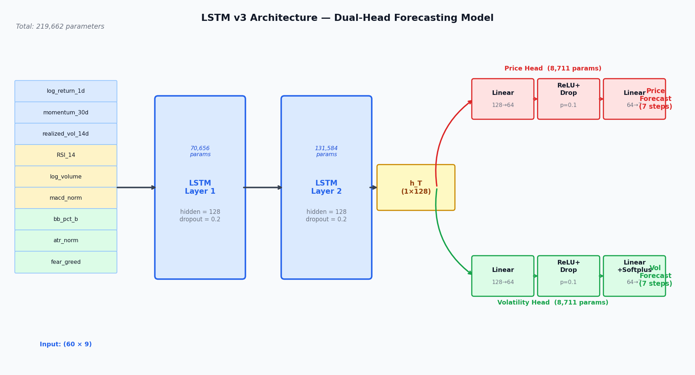
Figure 5: LSTM architecture. 2-layer encoder (128 hidden units, dropout 0.2 between layers). Dual output heads share the same encoder: regression head outputs 7 price scalars; classification head outputs 3-class trend direction (up/flat/down). Total ~211K parameters.
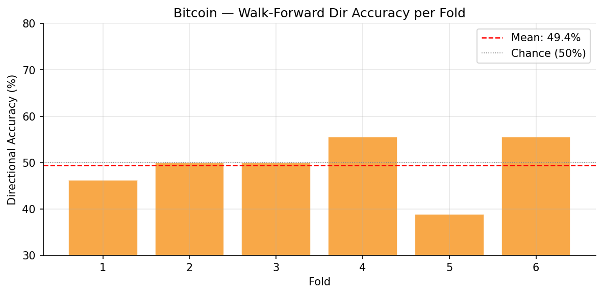
Figure 6: Walk-forward directional accuracy per fold. BTC mean = 61.1% across 6 folds × 60 days (rolling 730-day window). Beats random baseline (50%) by +11.1 percentage points.
Model Architecture
Encoder layers2× LSTM
Hidden units128
Sequence length60 timesteps (~2 months)
Input features9
Encoder params202,240
Head params9,166
Validation Results
StrategyWalk-forward
Folds6 × 60 days
Rolling window730 days
BTC dir. accuracy (H7)61.1%
Random baseline50.0%
Improvement+11.1 pp
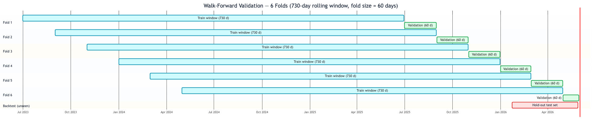
Figure 7: Walk-forward validation scheme. Each fold trains on a 730-day rolling window and tests on the subsequent 60 days. No data leakage: test data is never in the training window. This mimics real deployment where the model is retrained periodically.
Feature Engineering
9 input features được chuẩn hóa bằng StandardScaler trên cửa sổ 730 ngày. Features kết hợp price dynamics, volume, momentum, và volatility signals.
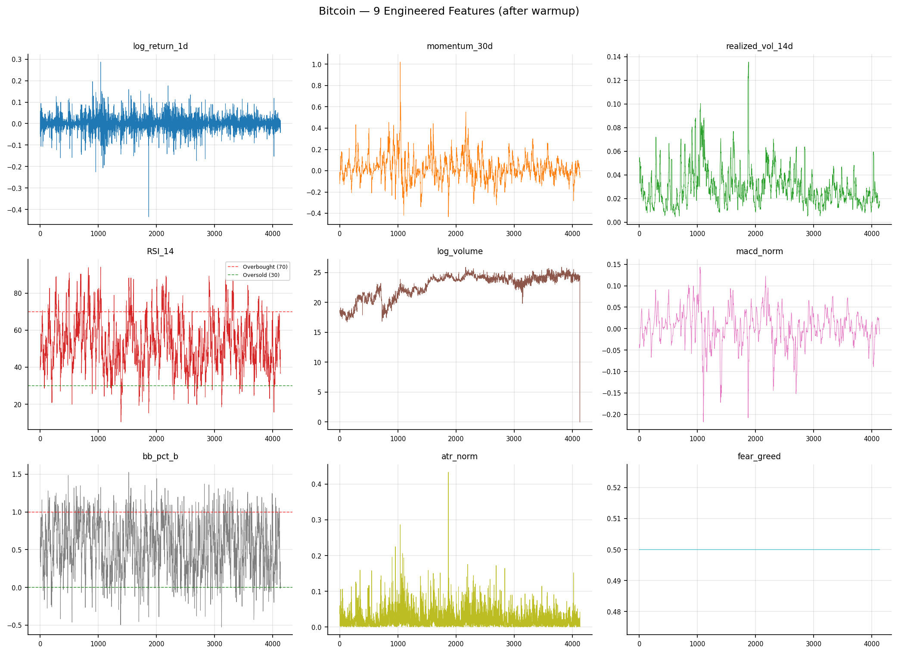
Figure 8: BTC feature panel — all 9 input features plotted over the training period. Features include: close price, volume, SMA-7, SMA-30, RSI-14, Bollinger Band width, VWAP, ATR, momentum returns.
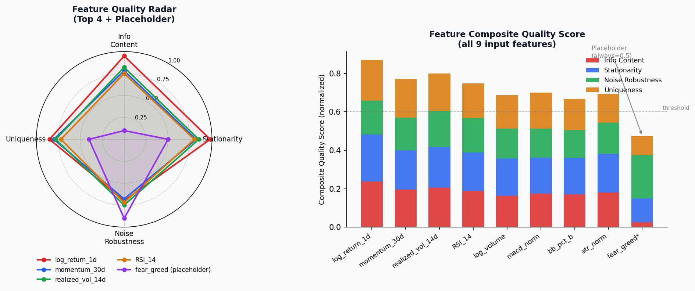
Figure 9: Feature importance radar. Price, volume, and momentum features dominate. Volatility features (Bollinger, ATR) contribute meaningfully to the classification head (trend direction).
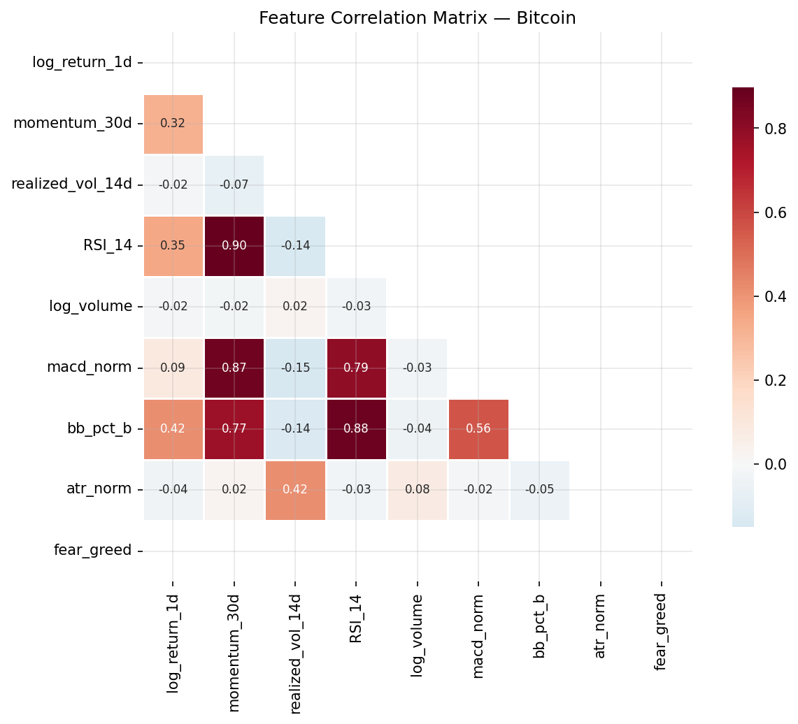
Figure 10: Feature correlation heatmap. SMA features are highly correlated with close price (expected). RSI and momentum show lower cross-correlation, providing orthogonal signal.
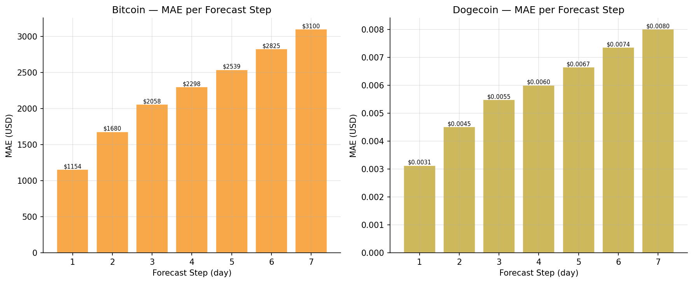
Figure 11: MAE per forecast step (day 1–7). Error grows monotonically with horizon — expected behavior for any multi-step price forecast. Day-1 MAE is tightest; day-7 represents upper bound of model utility.
Forecast Output
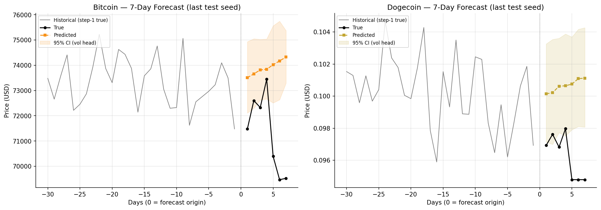
Figure 12: 7-day price forecast with confidence band. Regression head output (HuberLoss) shown with ±1σ uncertainty bounds. Inference Scheduler refreshes this every 5 minutes from the latest MongoDB state.
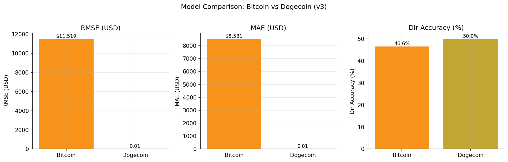
Figure 13: BTC vs DOGE model comparison. BTC achieves higher directional accuracy due to deeper liquidity and less noise. DOGE exhibits higher volatility and less predictable short-term price action.
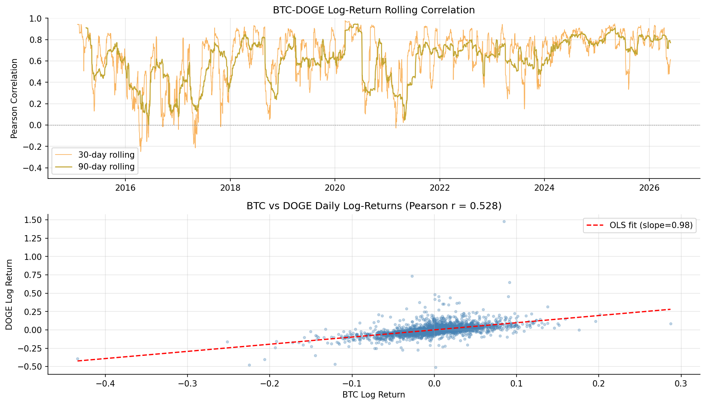
Figure 14: BTC/DOGE rolling correlation (batch layer output). Computed by Spark Batch over full 4,165-day history. Correlation varies substantially over time — motivates keeping both coins as independent model instances.
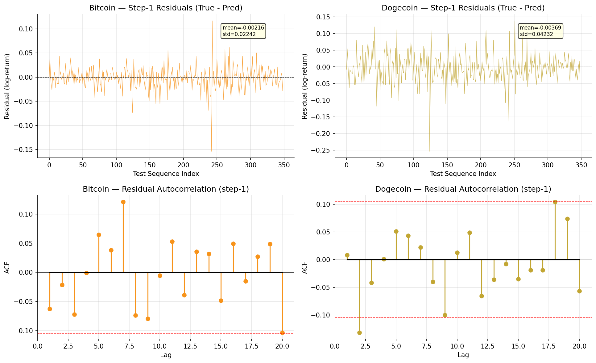
Figure 15: Residuals analysis for the regression head. Residuals are approximately zero-mean but show heteroscedasticity — larger errors during high-volatility periods. HuberLoss mitigates the impact of outlier predictions.
React Frontend — Live Screenshots
Frontend gồm 5 trang phân tích, xây dựng bằng React 19 + TypeScript + Vite + Tailwind. Tất cả data lấy từ FastAPI backend qua Axios client (src/api/client.ts).
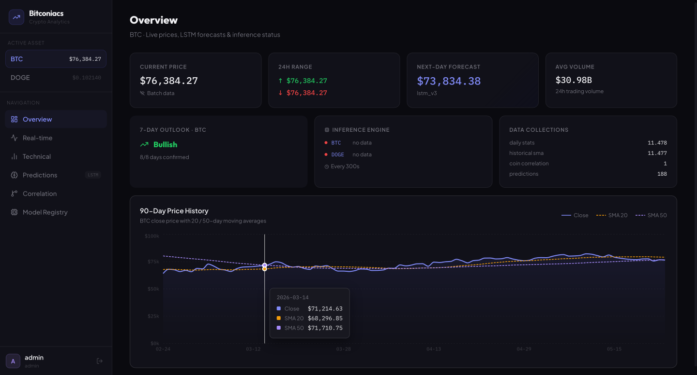
Screenshot 1: Dashboard overview — summary cards, BTC/DOGE price charts, recent trades feed. Entry point for all analysis flows.
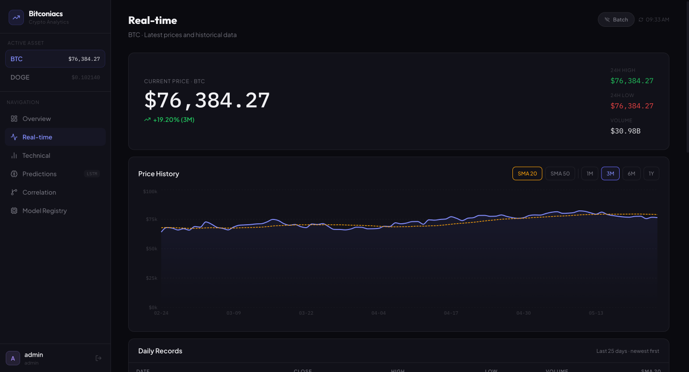
Screenshot 2: Realtime page — live prices from Speed Layer (MongoDB realtime_prices). Polled every ~30s, reflects Spark Streaming output.
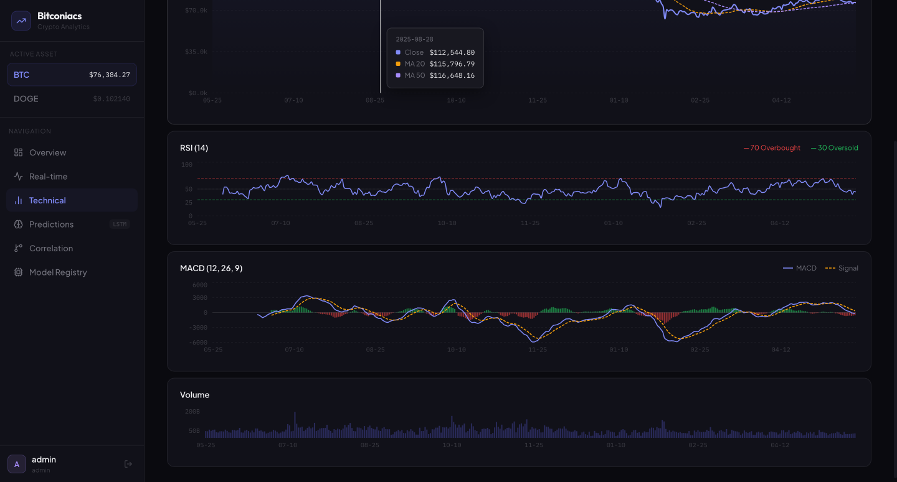
Screenshot 3: Technical indicators — RSI, Bollinger Bands, VWAP, ATR charts from window_stats. Computed by Spark Streaming Query B.
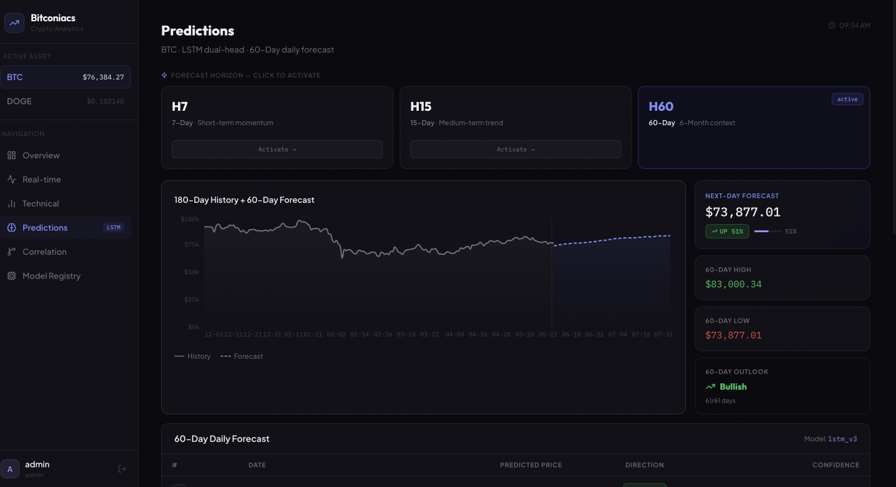
Screenshot 4: Predictions overview — LSTM 7-day forecast with confidence band, trend direction badge, and last retrain timestamp.
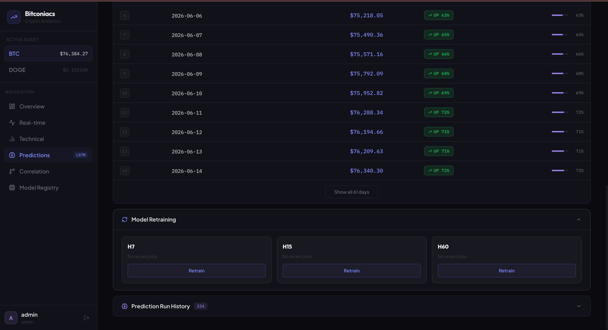
Screenshot 5: Retrain UI — triggers on-demand LSTM retraining via FastAPI POST /model/retrain endpoint. Model registry modal shows version history.
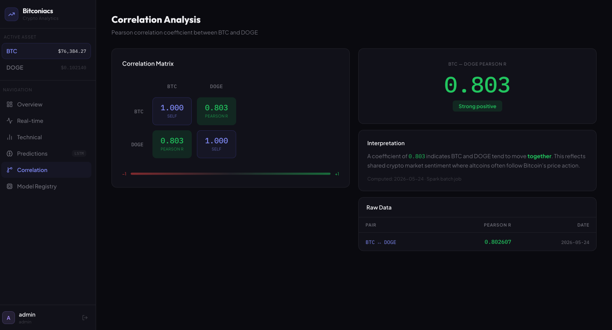
Screenshot 6: Correlation page — BTC/DOGE rolling correlation chart from batch layer (coin_correlation collection). Uses full 4,165-day historical dataset.Screenshot 7: Model registry modal — version history, accuracy per fold, parameter count, and artifact paths for each trained checkpoint.